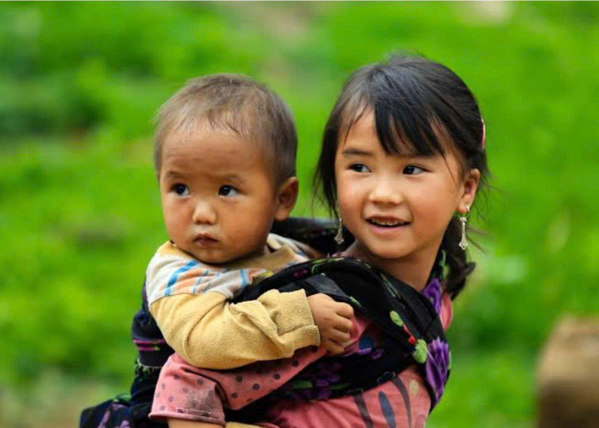

Đợi nhau qua con dốc
Ở một bản nhỏ giữa núi rừng Mù Cang Chải, những buổi chiều mùa hạ được gợi về bằng tiếng chân chạy trên đường đất, tiếng gọi nhau vọng qua những mái nhà và bóng dáng một đứa trẻ đứng đợi bạn bên con dốc quen. Với trẻ thơ, tình bạn chẳng có gì lớn lao ngoài những cuộc hẹn vui đùa, nhưng lại đủ sức khiến một quãng đường dài trở nên ngắn hơn và một buổi chiều bình thường hóa thành kỷ niệm đẹp.
Con dốc dẫn về phía nhà bạn
Chiều xuống chậm trên những triền núi. Nắng còn vương trên những thửa ruộng bậc thang, đổ một màu vàng nhạt xuống lối đi quanh co giữa những nếp nhà. Sau một ngày học tập, lũ trẻ lần lượt trở về, tiếng nói cười thỉnh thoảng lại vang lên rồi khuất dần sau một khúc quanh. Với chúng, ngày dường như vẫn còn dài, bởi cuộc vui mà cả nhóm mong đợi vẫn chưa bắt đầu.
Mỷ, cô bé người Mường với gương mặt trong veo đã thay quần áo, cất sách vở rồi chạy ra đầu con dốc. Em đứng nhìn về phía con đường dẫn sang nhà bạn, nơi mỗi buổi chiều vẫn có một người thường xuất hiện với dáng chạy vội vàng và tiếng gọi quen thuộc.
Rồi từ phía con đường nhỏ, bóng dáng Lử dần hiện ra. Mỷ ngẩng lên, gương mặt đang chờ đợi bỗng sáng hẳn. Hai đứa gọi tên nhau, tiếng gọi trong trẻo tan vào chiều núi, rồi cùng chạy về phía khoảng sân quen thuộc, để mặc con dốc nằm lại phía sau.
Những điều nhỏ bé giữa cuộc vui

Cuộc vui của Mỷ và Lử thường bắt đầu từ những điều chẳng có gì đặc biệt. Đôi khi chỉ là một lời gọi nhau í ới ngoài đầu dốc, một trò chơi vừa nghĩ ra hay vài món đồ nhặt được trên đường về nhà. Hai đứa có thể dành cả buổi chiều để chạy nhảy, bày ra đủ thứ trò nghịch ngợm, rồi lại ngồi bên nhau bàn xem ngày mai sẽ chơi gì.
Có những hôm, cả hai đắm chìm trong những trò chơi đến mức quên cả thời gian. Đứa nghĩ ra luật chơi, đứa nhanh nhẹn tìm đồ làm đạo cụ; khi một đứa chưa biết cách chơi, đứa kia lại kiên nhẫn chỉ cho bạn. Cũng như thế, những lúc ngồi bên nhau cùng học bài, Mỷ và Lử chẳng ngại giảng lại một phép tính hay cùng đọc đi đọc lại những dòng chữ còn khó nhớ. Có bài làm mãi chưa ra, có lúc cả hai cùng loay hoay, nhưng rồi một đứa chợt hiểu ra sẽ quay sang chỉ cho đứa còn lại. Việc học vì thế cũng có thêm tiếng cười, thêm những khoảnh khắc mà cả hai cùng vui khi cuối cùng đã tìm được đáp án.
Tình bạn của hai đứa còn được góp nhặt từ những lần sẻ chia giản dị. Trên đường đi chơi, nếu tìm được một quả chín, Mỷ thường nhớ phần cho Lử; còn khi được mẹ cho món quà bánh hay có thứ gì ngon, Lử cũng muốn mang sang để bạn cùng ăn. Đôi khi, phần quà chẳng có bao nhiêu, mỗi đứa chỉ được một miếng nhỏ, nhưng chúng vẫn vui vẻ chia nhau. Một củ khoai nóng, vài quả rừng hay món quà quê bình dị cũng đủ để buổi chiều trở nên đáng nhớ, bởi niềm vui khi có bạn bên cạnh dường như luôn đầy đặn hơn niềm vui của riêng mình.
Dẫu vậy, Mỷ và Lử cũng có những lúc chẳng thể hoà hợp với nhau. Một lần tranh lượt chơi, một lời nói vô tình làm cho gương mặt đang vui bỗng chùng xuống. Có khi cả hai quay đi, chẳng ai chịu lên tiếng trước, để khoảng sân bỗng yên ắng. Nhưng cơn giận của trẻ nhỏ cũng thường chẳng kéo dài quá lâu, nhất là khi cuộc vui vẫn còn dang dở và người bạn thân thiết vẫn ở ngay bên cạnh. Rồi chẳng mấy chốc, tiếng cười lại vang lên, tình bạn cũng vì thế mà lại được hàn gắn. Tình bạn của Mỷ và Lử được bồi đắp từ chính những điều nhỏ bé ấy, qua từng buổi chiều cùng vui chơi, từng trang vở cùng nhau học và từng món quà chẳng đáng là bao nhưng luôn có phần của cả hai.
Ngày mai, mình lại gặp nhau nhé!
Mặt trời dần khuất sau những dãy núi, nắng chiều cũng dịu xuống trên con dốc dẫn về bản. Sau một ngày chạy nhảy, hai đứa bắt đầu thu dọn đồ chơi, phủi đất trên quần áo rồi cùng nhau đi về. Trước khi rẽ về hai mái nhà, Mỷ và Lử có lẽ sẽ nhắc nhau nhớ mang theo món đồ còn thiếu, kể tiếp chuyện hôm nay hoặc đơn giản chỉ hẹn nhau ra đầu dốc vào buổi chiều hôm sau.
Trên con đường trở về, mỗi đứa mang theo những câu chuyện riêng của gia đình mình. Mỷ nhớ đến quả chín đã chia cho bạn, còn Lử nhớ buổi chiều cả hai cùng giải được bài tập khó. Những chuyện ấy nhỏ đến mức có thể ngày mai chúng đã quên đi, nhưng cảm giác được lớn lên cùng nhau trong những điều bình dị nhất vẫn âm thầm ở lại.
Rồi mai này, Mỷ và Lử sẽ lớn lên, mỗi đứa theo đuổi một ước mơ riêng, đi trên những con đường khác nhau và gặp gỡ thêm nhiều người bạn mới. Con dốc ngày xưa sẽ không còn là nơi hai đứa hẹn nhau mỗi buổi chiều, khoảng sân quen cũng dần lùi lại phía sau những năm tháng trưởng thành. Nhưng biết đâu, giữa những ngày bận rộn của cuộc sống, chỉ cần bắt gặp một quả chín ven đường, một món quà quê giản dị hay nghe ai đó nhắc về trò chơi thuở nhỏ, cả hai lại nhớ đến nhau, nhớ những buổi chiều vô tư chẳng phải lo nghĩ điều gì ngoài việc hôm nay sẽ chơi gì và ngày mai gặp nhau ở đâu.
Tình bạn bắt đầu từ những điều nhỏ bé nhất, thật thà nhất.
Bởi có những kỷ niệm chẳng cần được cất giữ bằng những món quà quý giá, mà tự khắc nằm lại trong lòng người qua tháng năm. Đó là tình bạn trong trẻo, chân thành và mộc mạc của những đứa trẻ vùng cao. Sau này, dù mỗi đứa có một ước mơ để đi xa, có lẽ Mỷ và Lử vẫn sẽ luôn dành một góc trong ký ức cho những ngày tháng đã cùng nhau lớn lên, nơi tình bạn bắt đầu từ những điều nhỏ bé nhất, thật thà nhất, và đẹp đẽ theo cách chẳng điều gì có thể thay thế.